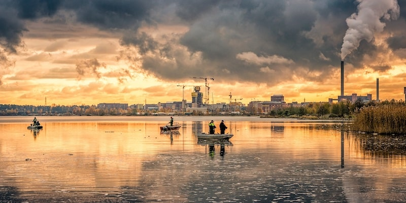
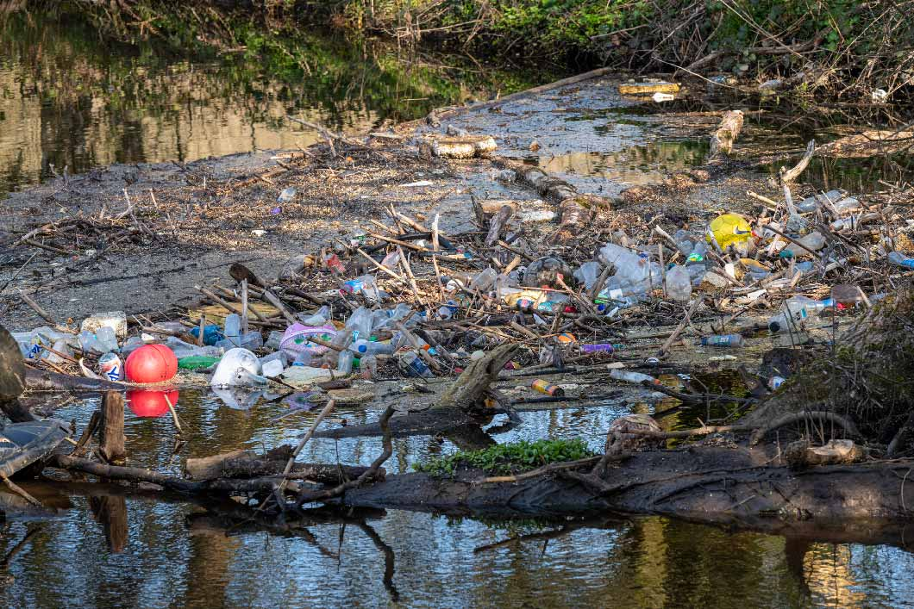
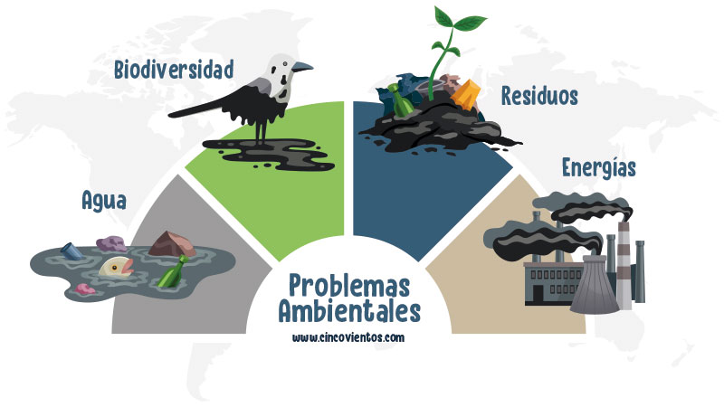

LAS PROBLEMÁTICAS AMBIENTALES Y LA IMPORTANCIA DEL AGUA
LAS PROBLEMÁTICAS AMBIENTALES Y LA IMPORTANCIA DEL AGUA

El abastecimiento de agua segura:
El acceso a agua potable es esencial para la salud humana. El consumo de agua contaminada puede dar lugar a enfermedades como el cólera, la fiebre tifoidea y la disentería.
La contaminación del agua:
La contaminación del agua por desechos industriales, agrícolas y domésticos representa una amenaza para la calidad del agua potable. Sustancias como pesticidas, metales pesados y microorganismos patógenos pueden causar enfermedades graves en la población y alterar el equilibrio de los ecosistemas.
La escasez de agua:
En muchas regiones del mundo, la escasez de agua dulce es un problema grave. La sobreexplotación de acuíferos y la mala gestión de recursos hídricos (especialmente en zonas donde el agua es un recurso escaso) pueden producir severos problemas para la población y las actividades económicas.
El acceso desigual al agua potable:
La falta de acceso equitativo al agua segura afecta desproporcionadamente a las poblaciones más vulnerables y a las personas que viven en lugares aislados, sin abastecimiento de agua segura. A nivel mundial, más de 2500 millones de personas carecen de acceso a fuentes de agua segura.
Las inundaciones:
El cambio climático aumenta la frecuencia y la intensidad de fenómenos climáticos extremos como inundaciones, huracanes y tormentas tropicales en muchas regiones del mundo. Estos eventos ponen en peligro a un número cada vez mayor de personas.
Las sequías:
El cambio climático global también profundiza los fenómenos de sequía, lo que extiende e intensifica los períodos en que no se producen lluvias o llueve menos de lo esperado. Esto afecta el abastecimiento de agua y a actividades económicas productoras de alimentos como la agricultura o la ganadería.

EFECTOS DE PROBLEMATICAS AMBIENTALES
Enfermedades respiratorias, como el asma, el enfisema y la fibrosis pulmonar.
Enfermedades de los ojos, como el glaucoma y la conjuntivitis.
Enfermedades de la piel, como la dermatitis y el salpullido.
Dificultad para acceder a servicios como el agua.
Proliferación de patógenos y vectores para diferentes enfermedades.
